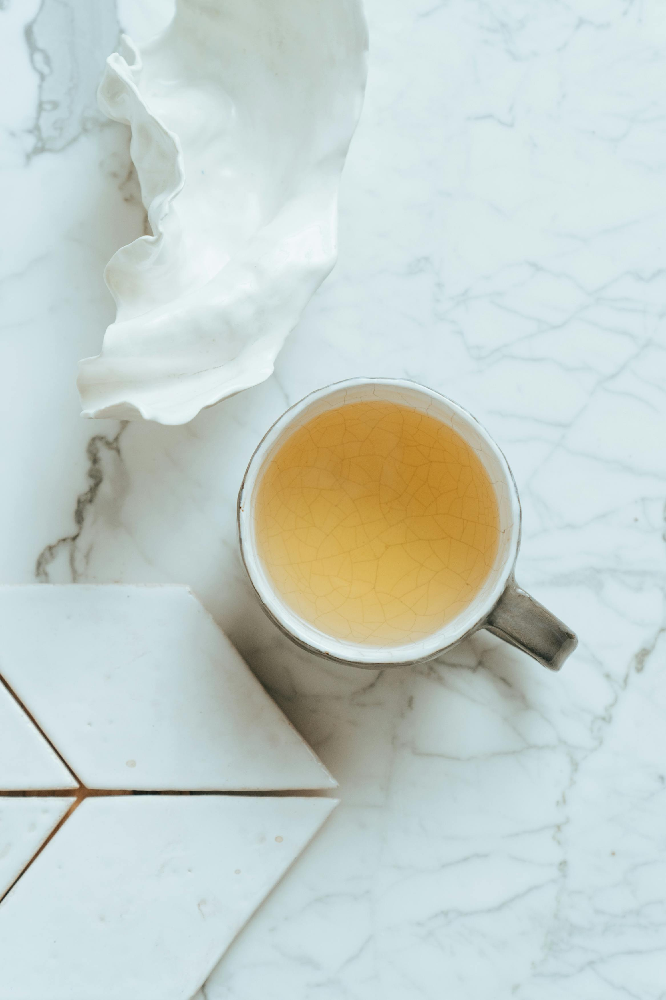

How to Make A Delicate Milk Tea
Home

Descriptions
A comforting, rich and traditional cup of hot Tea.This recipe uses a strong black tea based combined
with whole milk and sugar for the perfect morning drink.
Ingredients
- 1 black tea bag (or 1 teaspoon loose tea leaves)
- 6 ounces water
- 1 teaspoon sugar (or honey)
Steps
- Boil the water:Bring your water to a rolling boil in a kettle or small pot
- Steep the tea:Pour the boiling water ino your mug over the black tea bag.
Let it steep for 3 to 5 minutes so the tea becomes strong enough to handle the milk.
- Add milk and sweeten:Remove the tea bag, pour in the warm milk, and stir in your sugar until it completely dissolves.